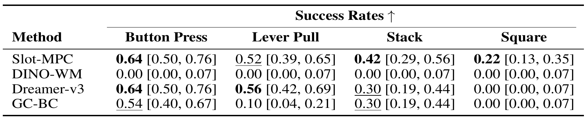

Predictive world models enable agents to model scene dynamics and reason about the consequences of their actions. Inspired by human perception, object-centric world models capture scene dynamics using object-level representations, which can be used for downstream applications such as action planning. However, most object-centric world models and reinforcement learning (RL) approaches learn reactive policies that are fixed at inference time, limiting generalization to novel situations.
We propose Slot-MPC, an object-centric world modeling framework that enables planning through Model Predictive Control (MPC). Slot-MPC leverages vision encoders to learn slot-based representations, which encode individual objects in the scene, and uses these structured representations to learn an action-conditioned object-centric dynamics model. At inference time, the learned dynamics model enables action planning via MPC, allowing agents to adapt to previously unseen situations.
Since the learned world model is differentiable, we can use gradient-based MPC to directly optimize actions, which is computationally more efficient than relying on gradient-free, sampling-based MPC methods. Experiments on simulated robotic manipulation tasks show that Slot-MPC improves both task performance and planning efficiency compared to non-object-centric world model baselines. In the considered offline setting with limited state-action coverage, we find that gradient-based MPC performs better than gradient-free, sampling-based MPC. Our results demonstrate that explicitly structured, object-centric representations provide a strong inductive bias for controllable and generalizable decision-making.
Slot-MPC uses a Scene Parsing model to decompose images into object representations, called slots.
A Conditional Object-Centric Predictor autoregressively forecasts future object states over the prediction horizon H, conditioned on the initial parsed object slots and an action sequence, which can be randomly initialized or produced by a learned policy, for example.
Given a goal image, the predicted slots at time step T = t + H and the goal slots obtained by parsing the goal image are used to optimize the action sequence by minimizing the distance between predicted and goal object configurations in slot space.
We perform local trajectory optimization with a latent object-centric dynamics model. Instead of sampling hundreds or thousands of action sequences at each step as done by gradient-free, sampling-based methods such as the Cross-Entropy Method (CEM) or Model Predictive Path Integral (MPPI), Slot-MPC considers a single trajectory sampled from a policy prior and optimizes the action sequence by using gradient descent. The first action is applied to the environment, and the procedure is repeated for the next time step.
For our experiments, we evaluate our proposed approach on four robotic manipulation environments from Meta-World and Robosuite. We use only visual observations in all environments and do not rely on additional inputs such as proprioceptive states.
We compare Slot-MPC against established baselines for both online and offline reinforcement learning, including goal-conditioned behavior cloning (GC-BC), Dreamer-v3, and DINO-WM.
Our evaluation protocol differs from the procedure used by DINO-WM, which only considers short randomly sampled sub-trajectories. Instead, we evaluate full episodes, which better reflects long-horizon planning performance and task completion.

On top of the quantitative evaluation, we also provide videos of the evaluation episodes (simulated execution) for the different environments when using Slot-MPC to optimize the actions at inference.
DINO-WM fails completely for longer goal horizons. The predictions (bottom) deviate from the actual environment (top, shaded) rollout. Goal images are shown on the right.